AI 요약
- • 안성맞춤명장 1호 이종오 명장의 공방에서 한 점씩 만드는 초승달 모양 유기 워리스톤 키링입니다.
- • 도금이 아닌 구리·주석 합금 유기의 묵직한 감촉과, 엄지가 자연스럽게 감기는 곡선을 손으로 다듬어 완성했습니다.
- • 소재 시험성적서 내용을 본문에 공개하며, 고유 번호를 새긴 100개만 제작합니다.
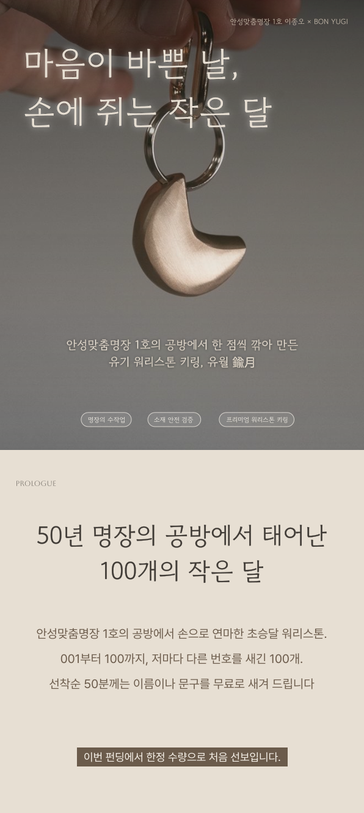
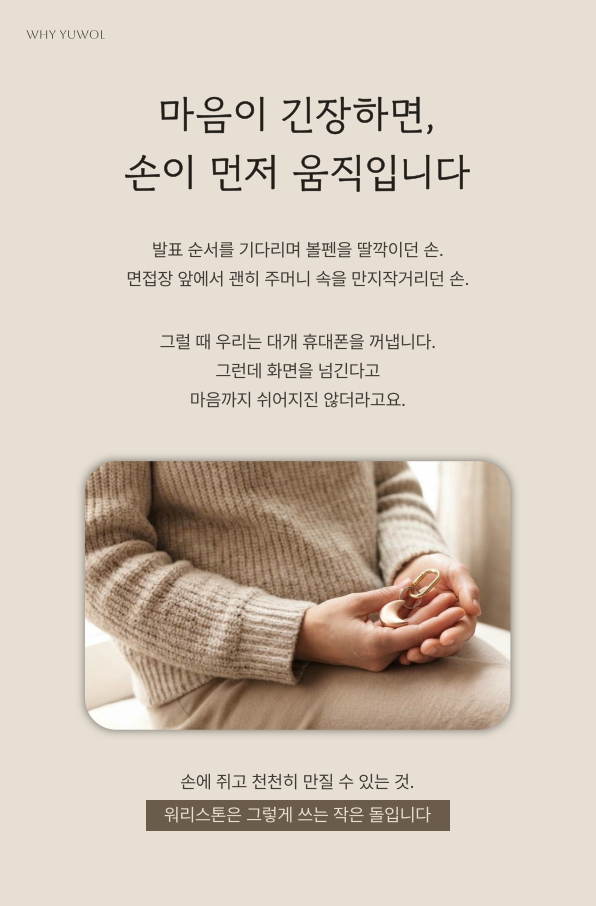
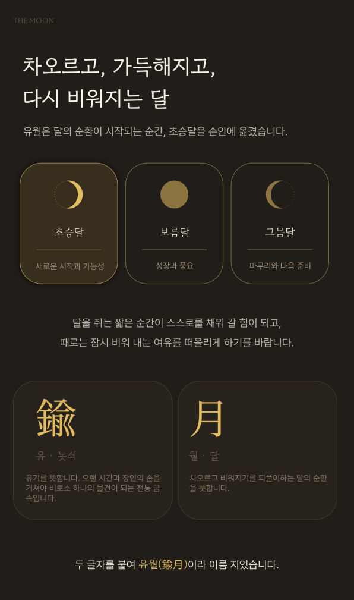
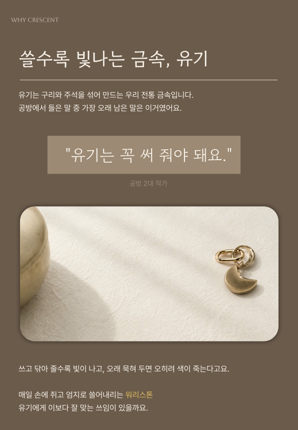
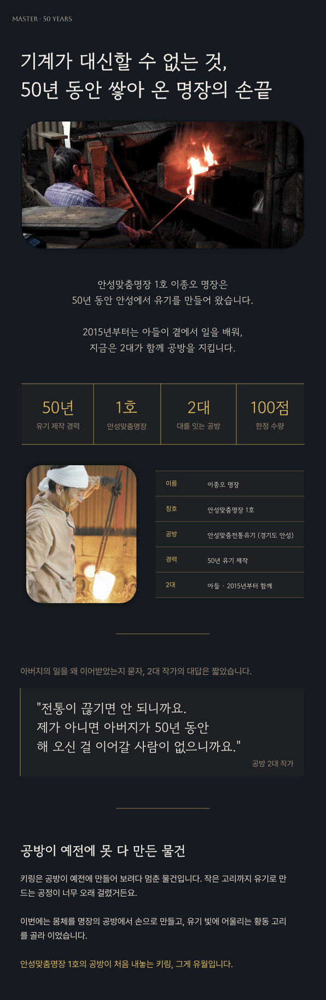
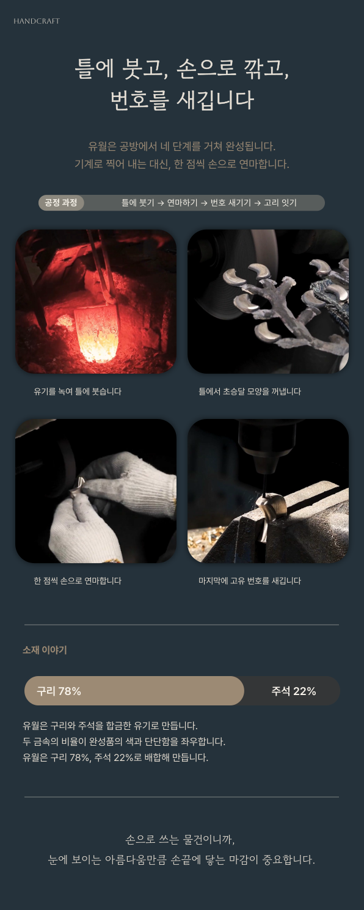
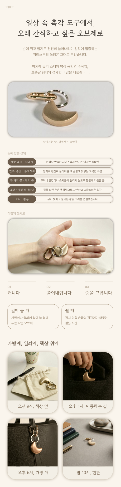
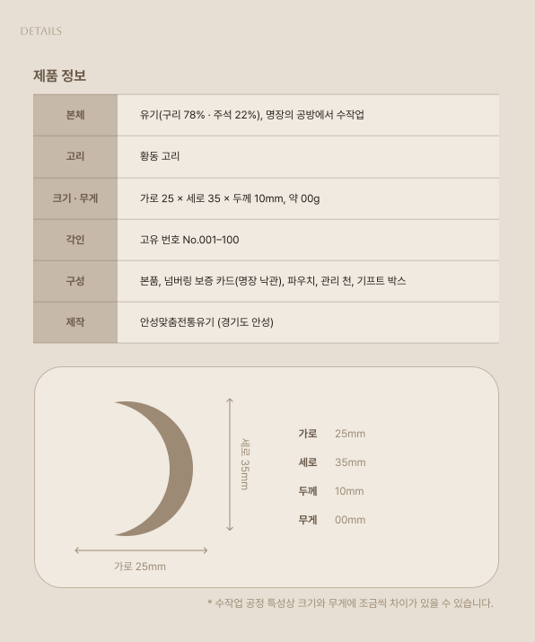
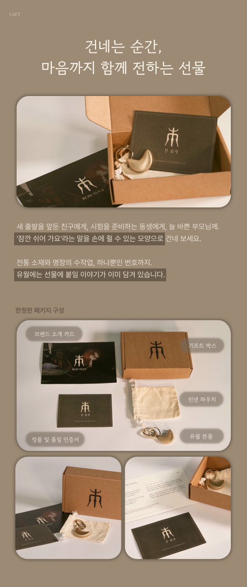
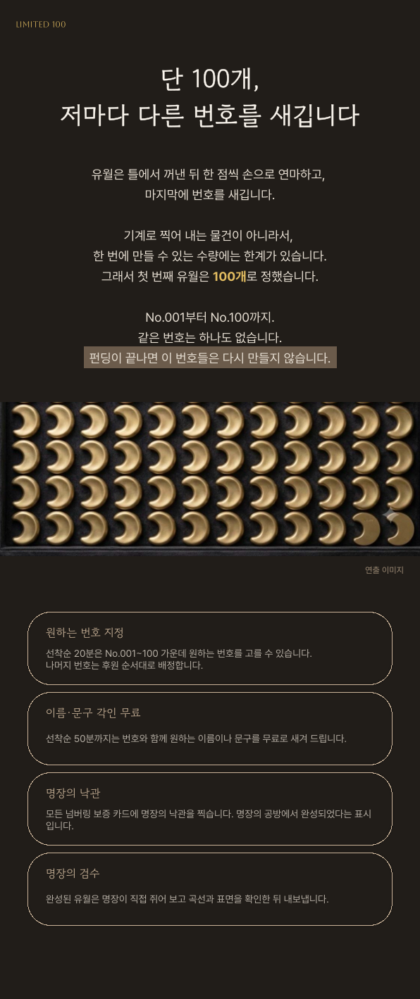
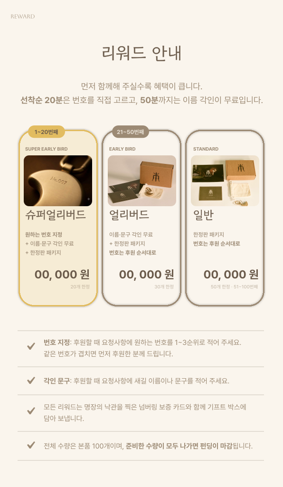
전통 유기 기술이 다음 세대로 이어지려면, 오늘의 생활 속에서 유기를 새롭게 만나는 경험이 필요합니다. 유월은 명장의 기술을 일상의 물건으로 소개하는 첫 시도입니다. 이번 펀딩이 그 가능성을 확인하고 다음 제품으로 이어지는 출발점이 되기를 바랍니다.
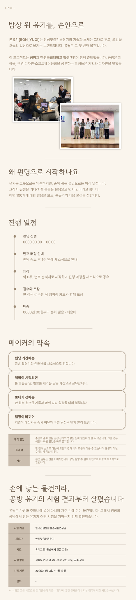
손에 가볍게 쥐고 엄지로 가운데 오목한 면을 천천히 쓸어내리면 됩니다. 긴장되거나 생각이 많을 때 손끝의 감각에 잠깐 집중하는 용도로 쓰실 수 있습니다.
유월은 안성맞춤명장 1호 이종오 명장의 공방, 안성맞춤전통유기에서 만듭니다. 공정별로 명장이 직접 맡는 부분과 공방 장인이 함께하는 부분, 명장의 최종 검수 방식은 확인한 그대로 이곳에 적겠습니다. 확인 후 기재
손바닥 안에 들어오는 크기입니다. 정확한 가로·세로·두께와 무게는 시제품 실측 후 안내하겠습니다. 실측 후 기재
유기는 사용 환경에 따라 표면 색이 서서히 달라질 수 있습니다. 소재의 특성에 따른 변화이며, 동봉한 관리 천으로 부드럽게 닦아 관리하실 수 있습니다.
소재 관련 시험을 진행했으며, 시험 기관과 항목, 결과는 실제 시험성적서에 적힌 범위 안에서 본문 '소재 시험' 부분에 공개합니다. 성적서 확인 후 최종 기재
유월은 구리와 주석을 합금한 유기로 만듭니다. 금속에 대한 민감도는 사람마다 다르니, 금속 알레르기가 있거나 피부가 민감하시다면 후원 전에 시험성적서 내용을 확인하시고 문의해 주세요.
물에 닿았다면 젖은 채로 오래 두지 말고, 부드러운 마른 천으로 물기를 닦아 보관해 주세요.
번호 배정 방식은 지금 확정하고 있습니다. 후원 순서대로 배정할지, 희망 번호 신청을 받을지 정해지는 대로 안내하겠습니다. 방식 확정 후 교체
이번 유월은 100개 한정으로 만들며, 펀딩이 끝난 뒤 추가로 생산하지 않을 예정입니다.
모든 리워드는 기프트 박스에 담아 보내 드립니다. 따로 포장하지 않아도 그대로 선물하실 수 있습니다.
수작업 제품이라 표면의 미세한 결이나 색 차이가 있을 수 있습니다. 파손이나 오배송은 수령 후 7일 안에 문의해 주세요. 교환·환불 기준은 플랫폼 정책과 최종 판매 조건에 따라 안내합니다. 플랫폼 정책 확인
본문의 일부 이미지는 제품 이해를 돕기 위한 연출 이미지입니다. 실제 제품은 수작업으로 만들어 표면의 결이나 색감에 미세한 차이가 있을 수 있습니다.
차오르는 달 하나를 손안에 담아 보세요.
100개 가운데 하나, 당신의 번호가 기다립니다.
등록된 최근소식이 없습니다.
등록된 문의 내역이 없습니다.
등록된 프로젝트 후기가 없습니다.
아직 후원자가 없습니다. 펀딩이 시작되면 이곳에 후원 내역이 표시됩니다.